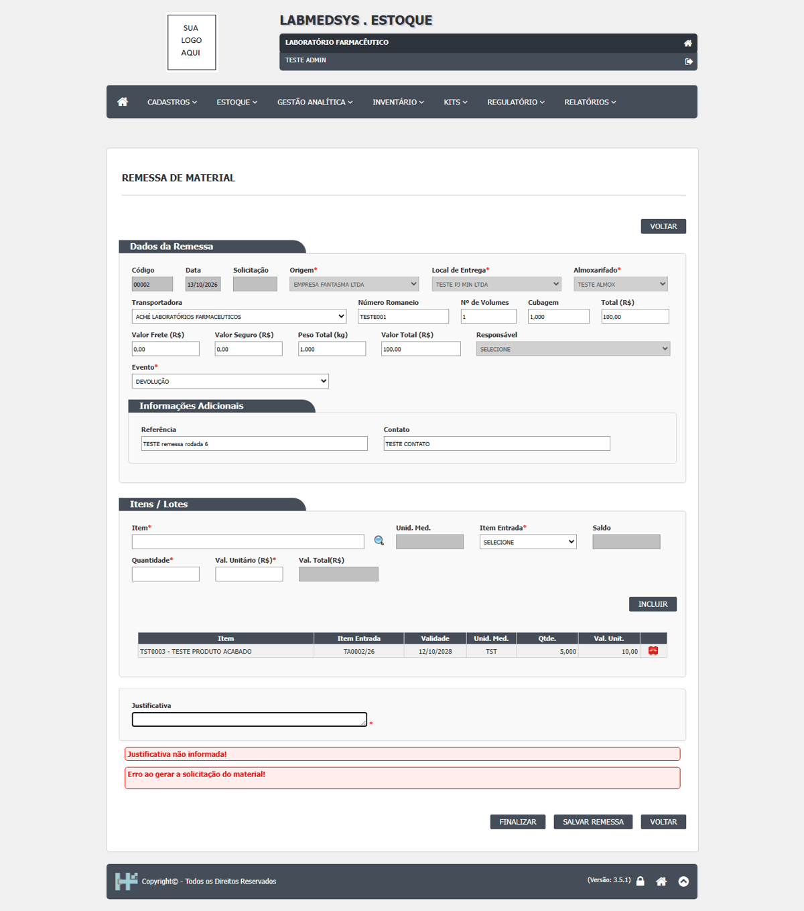
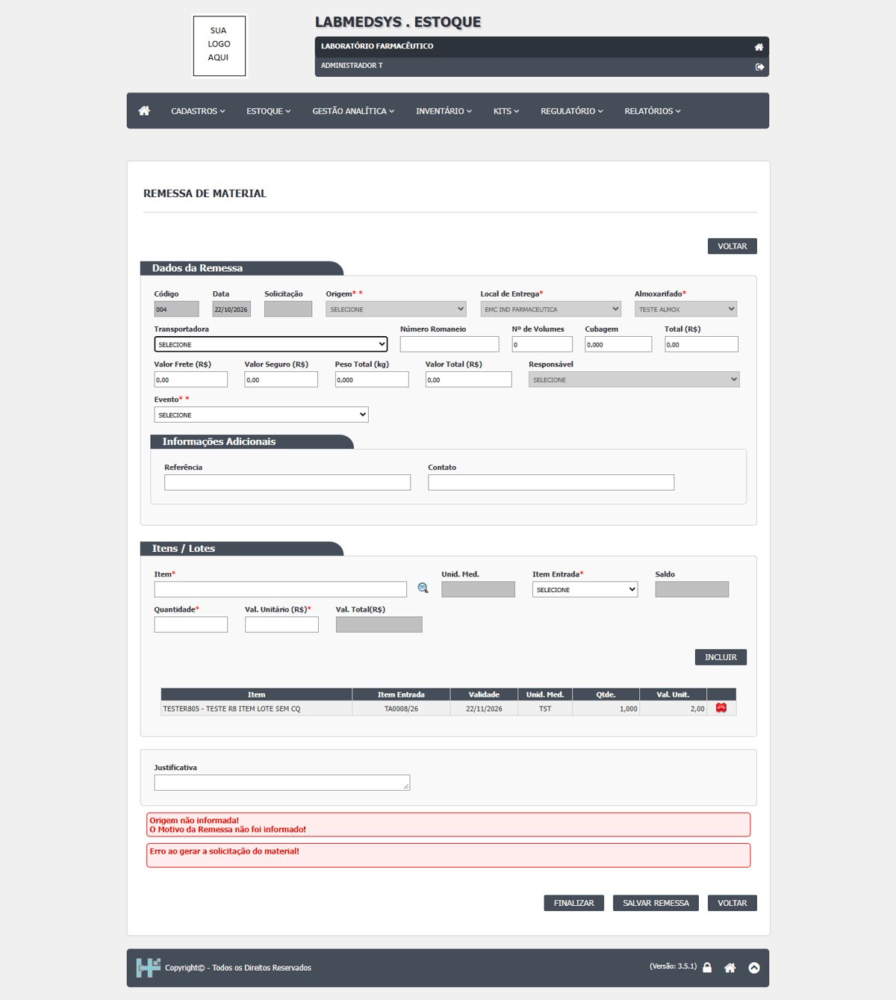
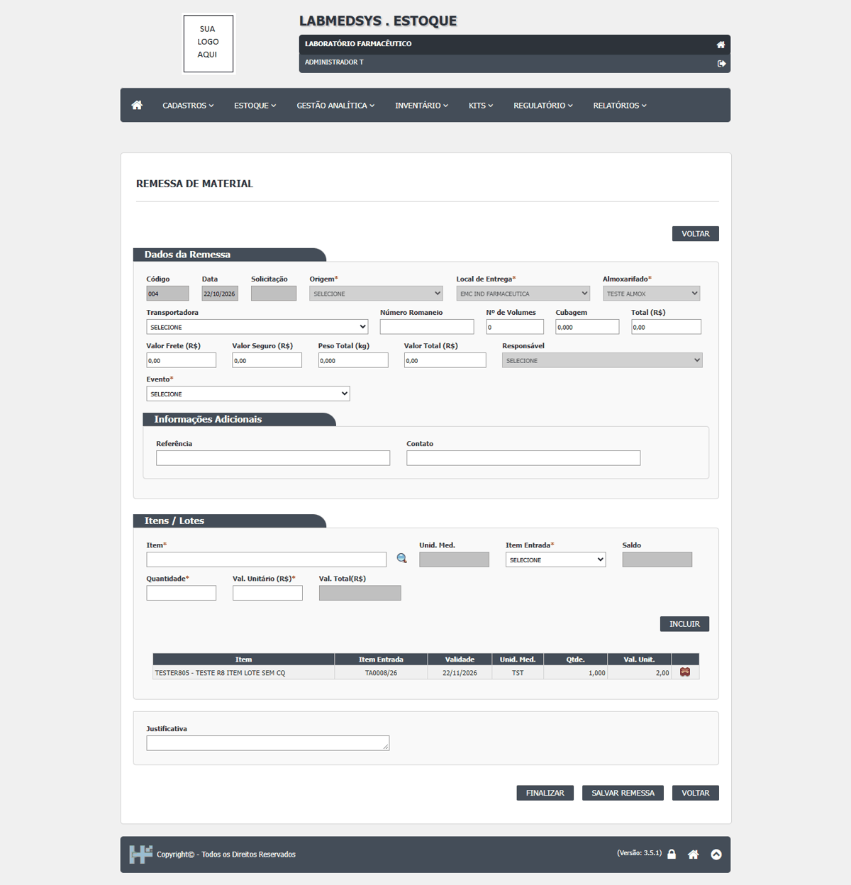
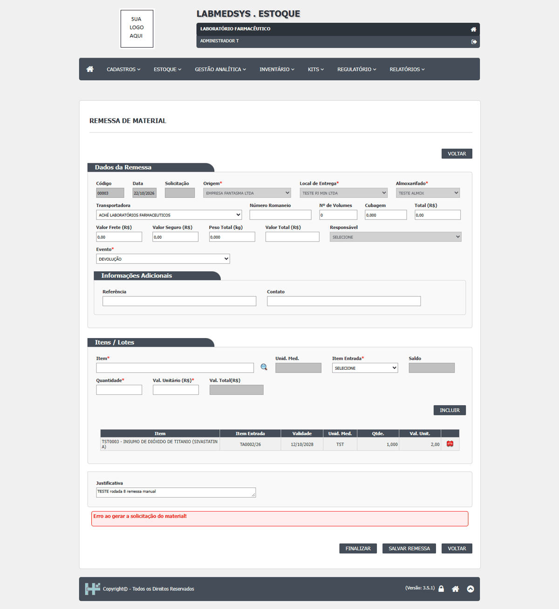
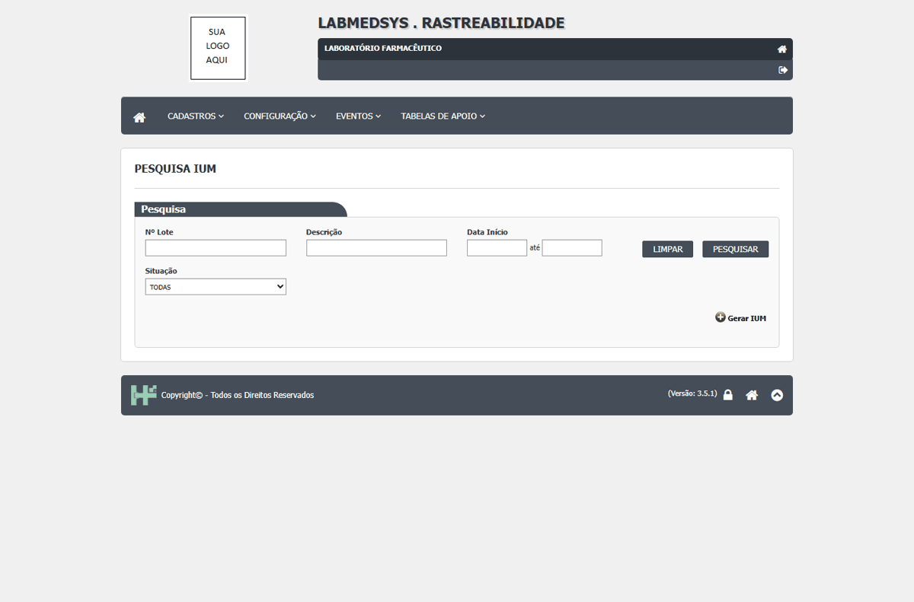
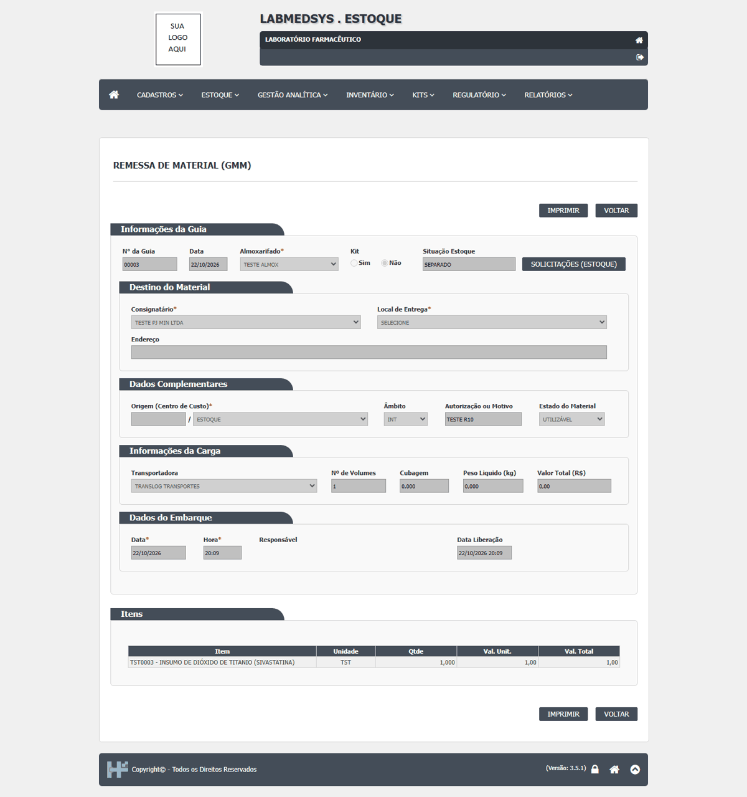
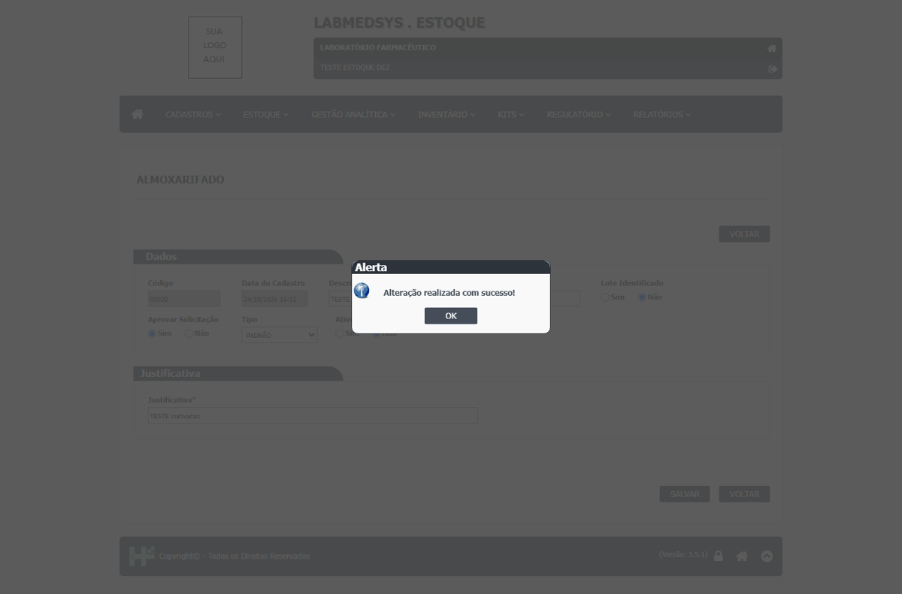
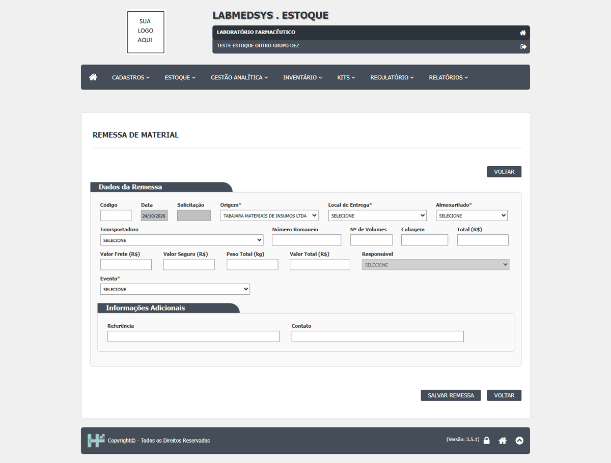

DV-EST-046 · A remessa não pode ser finalizada: "Erro ao gerar a solicitação do material!"
Na remessa `00002` (1 item, 5 unidades do `TESTEPA001`), o **Finalizar** termina sempre em "Erro ao gerar a solicitação do material!" e a remessa fica na mesma etapa, sem data de liberação, sem baixar o saldo e sem evento de saída. **Confirmado na rodada 7 com a justificativa preenchida** (na rodada 6 ela estava em branco, e a tela mostrou as duas mensagens). A expedição pela tela fica travada. Além disso, com a justificativa em branco a rotina não para na validação e mostra o erro genérico por cima da mensagem do campo.
Como reproduzir o erro, passo a passo
- Abrir Estoque › Remessa de Material, criar a remessa, incluir um item e preencher a Justificativa.
- Clicar em Finalizar e confirmar "Deseja finalizar a Remessa?".
Esperado
Remessa finalizada: data de liberação gravada, saldo baixado, aviso à Rastreabilidade.
Obtido
"Erro ao gerar a solicitação do material!"; a remessa continua na mesma etapa.
Evidência (captura da tela)

DV-EST-058 · A remessa gerada pela solicitação de kit nasce sem Origem e sem Responsável e não pode ser finalizada
Ao gerar a solicitação/guia do kit, o sistema cria a remessa 004 com Origem em "SELECIONE" e Responsável em "SELECIONE", e os dois campos ficam desabilitados. Finalizar dá "Origem não informada!", "O Motivo da Remessa não foi informado!" e "Erro ao gerar a solicitação do material!". Na remessa manual nova (00003), o campo Responsável também fica desabilitado e vazio, e o FINALIZAR dá "Erro ao gerar a solicitação do material!" mesmo com Origem, Destino, Almoxarifado, Evento, item e justificativa preenchidos. Pista para o DV-EST-046: o Responsável nunca é gravado.
Como reproduzir o erro, passo a passo
- Em Kits › Solicitação de Kits, criar a solicitação 00002 (kit 00002), finalizar e clicar em GERAR SOLICITAÇÃO / GUIA (Local de entrega e justificativa).
- Em Remessa de Material, abrir a remessa 004: Origem e Responsável estão desabilitados em SELECIONE.
- Incluir o item do lote (1,000) e clicar em FINALIZAR e SIM.
Esperado
Remessa gerada já com a Origem, o Responsável e o Evento; finalização que gera a solicitação do material.
Obtido
"Origem não informada!"; "Erro ao gerar a solicitação do material!". A remessa manual 00003 também falha com o mesmo erro.
Evidência (captura da tela)



DV-EST-072 · A remessa confirmada no Estoque não aparece em nenhuma tela do módulo Rastreabilidade (a validar com a área)
A remessa `00003` foi finalizada e teve o embarque confirmado ("Embarque liberado!"), com a solicitação de estoque 00064 atendida e separada. No módulo **Rastreabilidade** (Pesquisa de IUM, Geração de IUM, Agregação e os eventos de produção, embalagem e transporte, entrega, recebimento e finalização) **nada lista remessa**. Todas as telas trabalham por IUM (identificador único do medicamento) e por lote; os eventos de transporte e entrega são formulários digitados à mão. O código do módulo Rastreabilidade não tem nenhuma referência a "remessa". Ou seja, a saída do Estoque não alimenta a rastreabilidade.
Como reproduzir o erro, passo a passo
- Em Estoque › Parâmetros do Estoque, deixar o tipo de remessa em GMM, finalizar uma remessa e Confirmar embarque (ver DV-EST-046).
- Abrir o módulo Rastreabilidade e procurar a remessa nas telas Pesquisa de IUM, Agregação e Eventos.
Esperado
A remessa confirmada aparece para envio na Rastreabilidade (ou gera o evento de transporte/entrega).
Obtido
Não aparece; não há ligação entre os módulos.
Evidência (captura da tela)


DV-EST-078 · A Remessa de Material oferece o almoxarifado inativo e o almoxarifado que foi desligado do grupo do usuário
Item, Local e Solicitação de Material (Consumo) deixam de oferecer o almoxarifado inativo; a Remessa de Material continua oferecendo. Com o TESTE ALMOX USO desligado do grupo 9910, o usuário desse grupo ainda o vê na lista da Remessa (3 opções: SELECIONE, TESTE ALMOX, TESTE ALMOX USO), embora o Local já não o ofereça.
Como reproduzir o erro, passo a passo
- Inativar o TESTE ALMOX NOVO (Ativo = Não, com justificativa). Abrir as listas de escolha do almoxarifado em Item, Local de Armazenagem, Solicitação de Material (Consumo) e Remessa de Material.
- Ligar o TESTE ALMOX também ao grupo 9910 e, em seguida, desligar (X da grade, SIM em "Confirma a exclusão do registro?") o TESTE ALMOX USO do grupo 9910. Repetir a Movimentação de Material, o Local e a Disponibilidade com o usuário do grupo 9910.
Esperado
Almoxarifado inativo, ou desligado do grupo do usuário, não aparece em nenhuma lista de escolha.
Obtido
Item, Local e Solicitação de Material (Consumo) deixam de oferecer o almoxarifado inativo; a Remessa de Material continua oferecendo. Com o TESTE ALMOX USO desligado do grupo 9910, o usuário desse grupo ainda o vê na lista da Remessa (3 opções: SELECIONE, TESTE ALMOX, TESTE ALMOX USO), embora o Local já não o ofereça.
Evidência (captura da tela)

